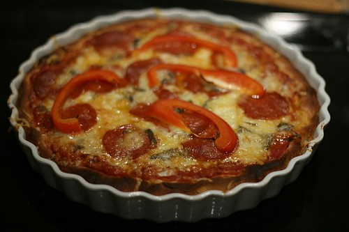
Deep Pan Pizza. Pizza på chicago-vis. Her er en oppskrift.
Pizza er min favorittrett over alle favorittretter. Ingen rett er så godt likt av så mange mennesker. Altså, det er verdens beste rett.
Vel, nå finnes det mange måter å lage pizza på. Tunn bunn, tykk bunn, sprø bunn, myk bunn. Med tomatsaus, uten tomatsaus, masse ost, lite ost osv…
Retten jeg skal vise dere i dag, er en såkalt deep pan, eller deep dish pizza, og som også kalles Chicago style, ettersom dette strengt tatt er en amerikansk pizza-type, utviklet av italienske innvandrere i USA.
Den er ikke sunn, men forbasket god. Forskjellen på denne, og en vanlig italiensk pizza, er bunnen. Denne består av 75% bunn. Derfor er det viktig at bunnen er god og fyldig. Den må ikke være for tørr, og ikke for fuktig, og det ytterste laget bør helst være sprøtt.
Hvordan løse dette? Vel, i min kokebok, kommer de etter utallige forsøk frem til at BAKEPOTET er løsningen. Jepp, du leste riktig. Vi skal ha bakepotet i deigen.
Og slik går vi mer eller mindre frem for å lage 2 pizzaer i 35 cm-former:
BUNN:
2 middels store bakepoteter (omlag 500 gram til sammen)
16,5 dl hvetemel
3 ts tørrgjær
3,5 ts salt
4,75 dl lunkent/varmt vann
12 spiseskjeer olivenolje
SAUS (Dette blir litt for mye saus, egentlig, men det er bedre med for mye enn for lite, og vær så snill og ikke dynk pizzaen din med saus for å bruke opp alt. DETTE ER FOR MYE. Du er herved advart)
2 bokser med tomat
4 hvitløksfedd
400 g revet Norvegia, eller Jarlsberg (skal ikke oppi sausen)
2 dl revet parmesan ost (skal ikke oppi sausen)
6 spiseskjeer fersk oppskåret basilikum (skal ikke oppi sausen)
2 spiseskjeer tomatpuree
2 spiseskjeer olivenolje
Smak til med salt og pepper
(ellers kan du dandere med skinke, paprika, sopp, pepperoni, blåmuggost.. eller andre ting du liker å ha på pizzaen)
Først bunnen:
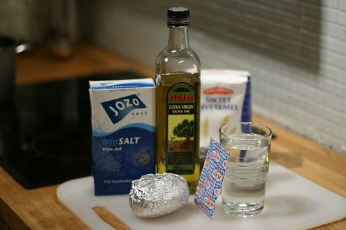
Rollelisten: salt, olivenolje, mel, vann, baktpotet og gjær.
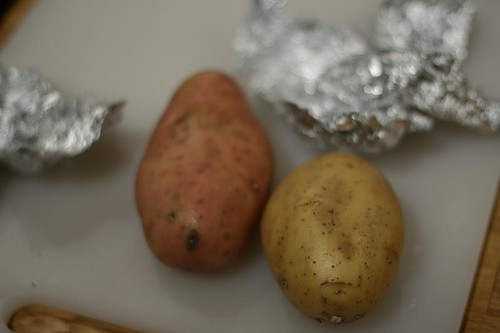
Finn frem bakepotetene…
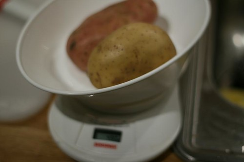
ca 500 gram
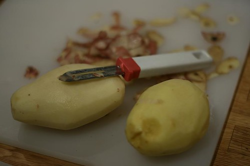
Skrelle dem godt…
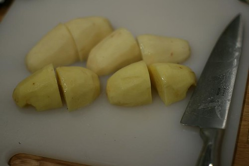
Kutt opp i middelsstore biter,
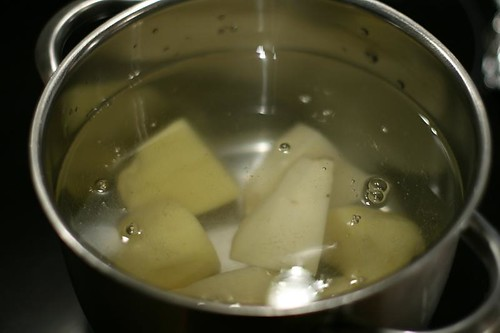
Sett dem til å koke..
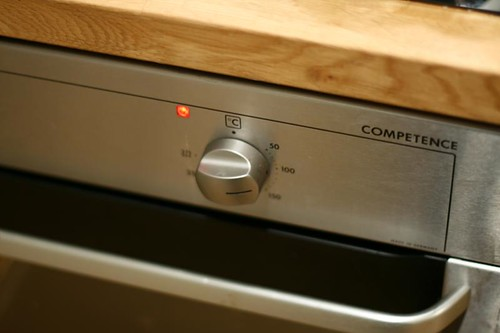
Sett ovnen på 100 grader. Etter 10 minutter på 100 grader, så skru av ovnen.
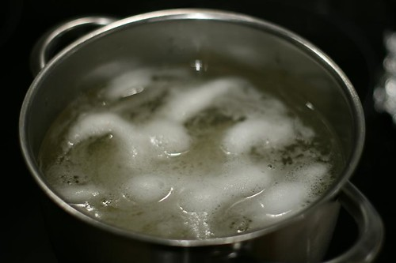
Kok potetene i 10-15 minutter til de er møre. Hell ut vann, og avkjøl poteten så mye at du kan rive dem opp på et rivjern.
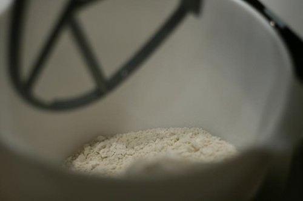
Hell melet i en bolle…
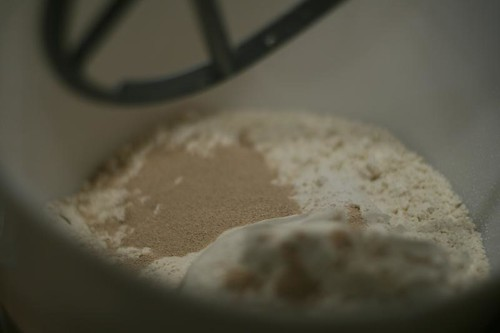
Oppi med gjær og salt også..
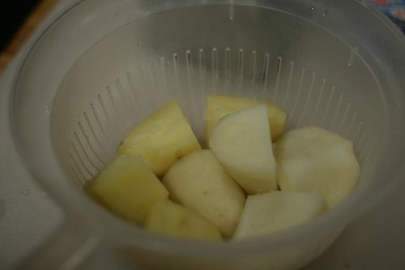
Slik avkjøler du potetene…
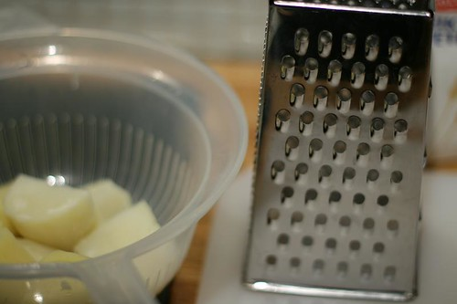
Så skal det rives..
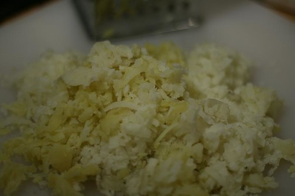
Og slik blir resultatet dersom du har vært flink.
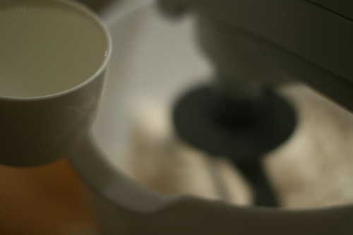
Tilbake til bollen med mel: Tilsett vannet til deigen formes…
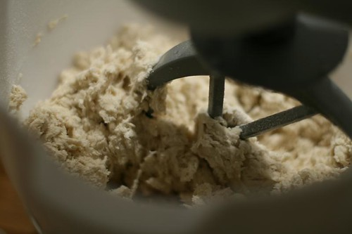
Her jobber maskinen godt…
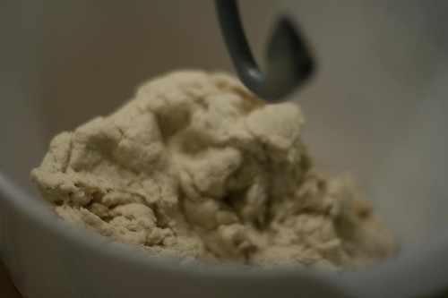
Sånn.. nå er det på tide med potetene..
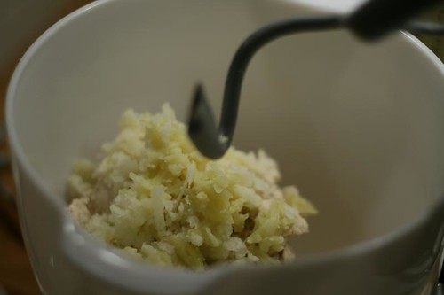
Oppi med potetene.. og bland sammen i 10 sekunder…
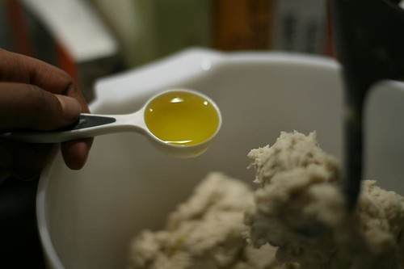
Deretter oppi med oljen…og kjør maskinen videre til deigen blir myk og fin..
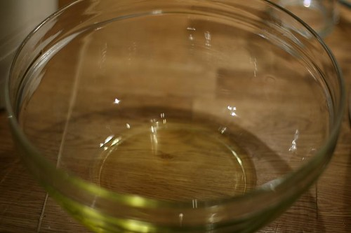
smør to boller med olje…
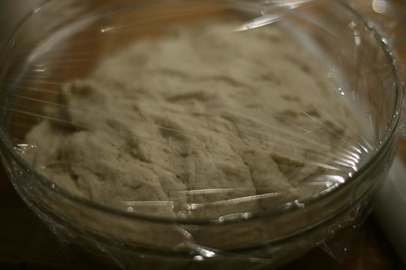
Del deigen, og ha en oppi hver bolle med plastfolie over..
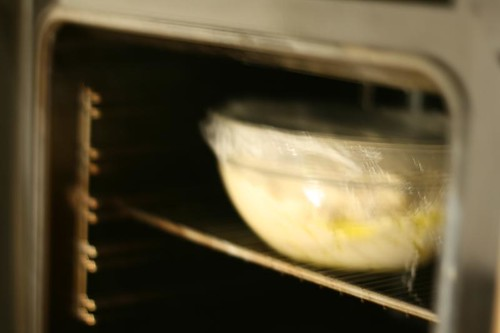
Inn med deigene i den varme ovnen…
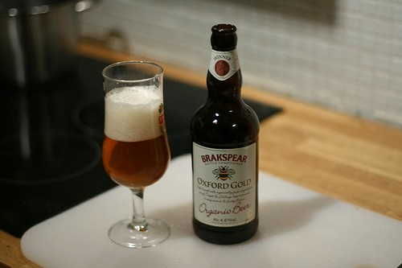
Ta en velfortjent øl underveis.. Dette er for øvrig en av mine desidert favoritter. Koster om lag 40 kroner på ICA
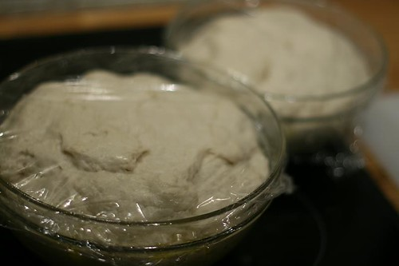
Ut med deigene etter 30-35 minutter når de har doblet størrelsen…
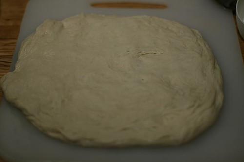
Spre deigen ut på en fjøl..
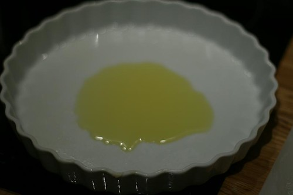
i mens, olje en form…
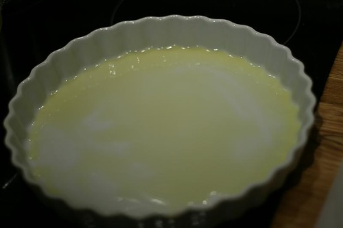
slik..
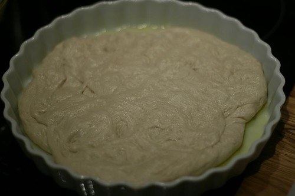
Spre deigen utover formen
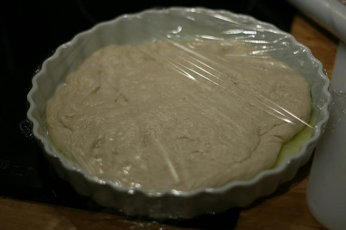
Og sett plastfolie over..ca 10 minutter
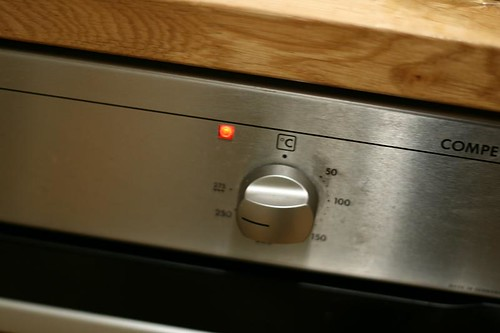
Sett ovnen på 220 grader
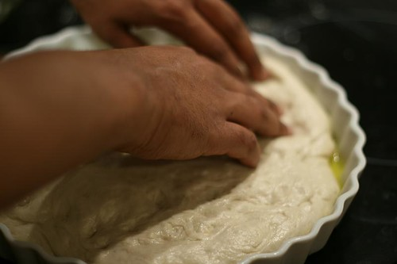
Etter 10 min… spre deigen ytterligere ut over formen, og lag en kant…
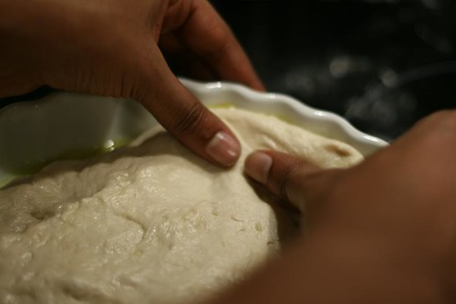
Slik som dette….
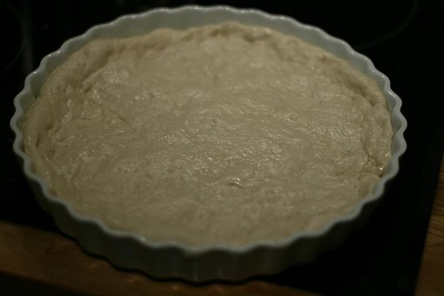
voila… ikke helt perfekt. kanten kunne vært høyere og formen større.. men skitt au- pizzaen ble veldig god for det..
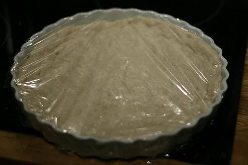
På med plastfolie, og la den hvile på et varmt og lunt sted i 30 minutter..
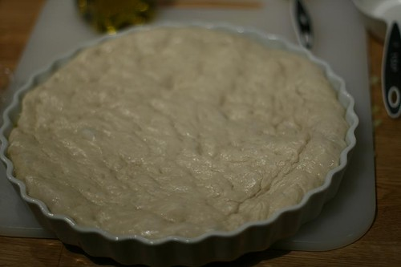
Så ser den slik ut..
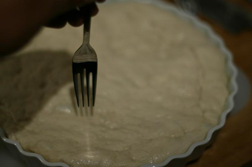
stikk hull på deigen med en gaffel…over hele flaten..
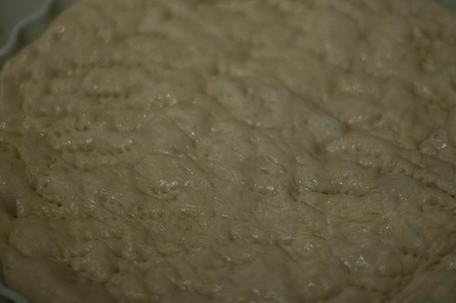
Slik…
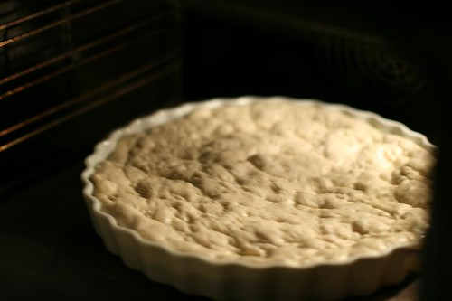
Så plassere den i ovnen..UTEN SAUS!!
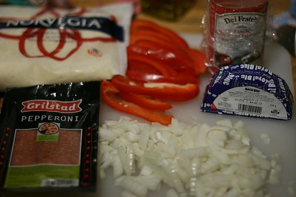
Gjør klar sausen og toppingen.. Jeg har valgt løk, pepperoni, blåmuggost.
Sausen (til to pizzaer) lager du slik:
Bland tomat, hvitløk, tomatpuree, olivenolje + salt og pepper. i en mixer i ca 10 sek.
Sausen er ferdig.
Riv parmesanost, norvegia. skjær opp basilkum og ha det klart. + alt det andre du ønsker å ha på pizzaen.
Når du legger fyll på pizzaen, begynn med tomatsausen, deretter med osten, så alt det andre. bruker du kjøtt og paprika, tar du det til slutt..
Parmesanosten og norvegiaen blander du sammen til en osteblanding.
Basilikumen strør du over pizzaen først når den er ferdig stekt.
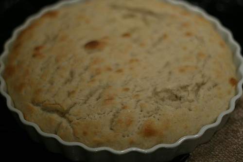
Etter 15 minutter ser deigen/bunnen slik ut. Du kan gjerne ha den i litt lenger slik at den får litt mer brunfarge enn dette…
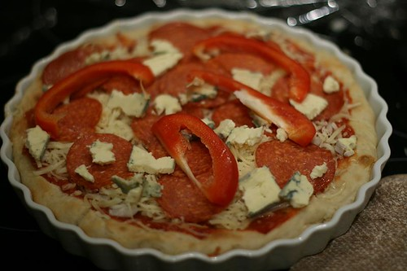
Legg så på saus og fyll…. Stek pizzaen på midterste rille til osten smelter…(ca 10-15 min)
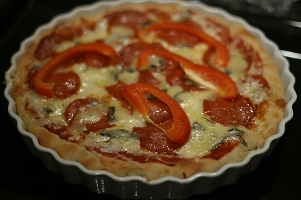
og pizzaen ser slik ut… Deretter flytter du pizzaen til øverste rille og steker vider i 5-10 minutter til..
Til den ser slik ut…! Du har nettopp laget din første potetpizza. Duverden så god den er.
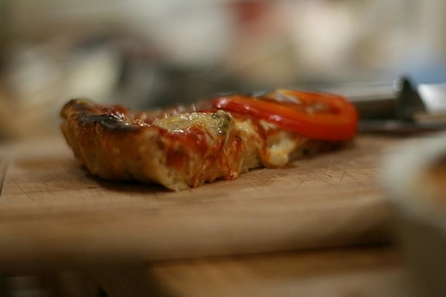
Hmm… Jeg antar at dette bildet overbeviser deg om å lage pizzaen…
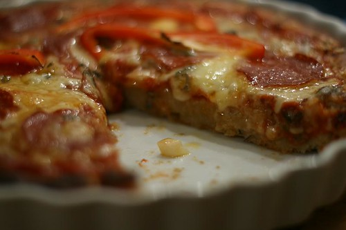
Vel.. Nå er du i hvertfall overbevist.
Lykke til!
Vil du få en mail fra meg neste gang jeg legger ut en oppskrift, så legg igjen e-postadressen i feltet under. I skrivende stund har jeg faktisk 50 abonnenter ?
Legg gjerne igjen en kommentar hvis du lager pizzaen. Jeg elsker tilbakemeldinger som kan bidra til at oppskriftene blir enda bedre, og jeg ønsker å høre erfaringene deres..